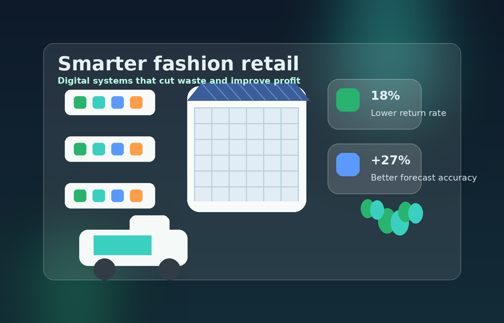
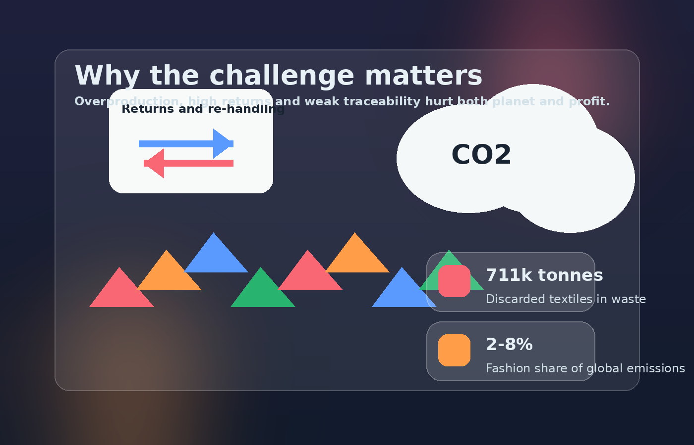
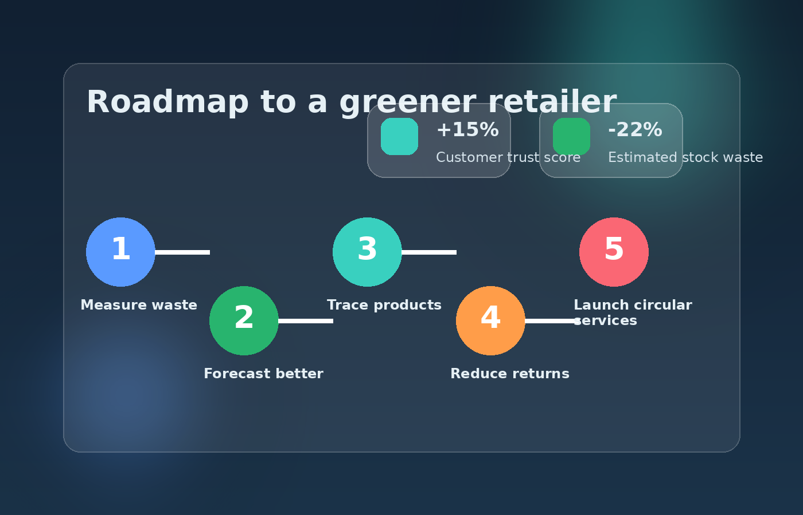

Transform a fashion retailer into a smarter, cleaner and more trusted business.
EcoThread Studio focuses on a growing online clothing retailer that wants to reduce waste, improve stock control, lower costly returns and strengthen customer confidence. Instead of treating sustainability as a side project, this website shows how it can be built into everyday business decisions.
The website uses business evidence, practical digital tools and ethical thinking to show how environmental performance and commercial effectiveness can improve together.

Visual summary: a retailer becomes more efficient when stock, logistics and sustainability data are connected.
Why this website topic works well
Fashion retail is a strong business example because it combines fast-moving operations, heavy data use, complex supply chains and growing environmental pressure. That makes it ideal for showing how evolving digital and technical challenges can be solved in a realistic way.
Digital challenge
Retailers need better forecasting, traceability and product information systems so that managers can react to demand quickly without creating avoidable waste.
Business challenge
Unsold stock, repeated markdowns and high return rates damage margins. Stronger data and clearer systems improve control and productivity.
Ethical challenge
Customers expect honest sustainability claims. A responsible retailer should use technology to prove impact, not just market itself better.
Fast overview
Core website argument
A sustainable retailer is not a slower retailer. It is a retailer that buys more accurately, uses better business data, manages products more transparently and creates less avoidable waste across its operations.
Move through the website
The Challenge
Learn why fashion retail creates environmental pressure and where the biggest operational risks appear.
Data and Insights
See the business measures that matter most, including forecasting, sell-through, returns and traceability.
Solutions
Review the roadmap showing which digital and technical actions should be taken first.
Image gallery

Challenge snapshot
The sector faces waste, emissions and weak supply-chain visibility.

Data snapshot
Managers need clear numbers to connect environmental performance with business effectiveness.

Solutions snapshot
A staged roadmap helps the retailer improve performance without trying to do everything at once.
Start now
Ready to turn the ideas into an action plan? The audit page contains a working form so the business can identify its most urgent sustainability priorities.